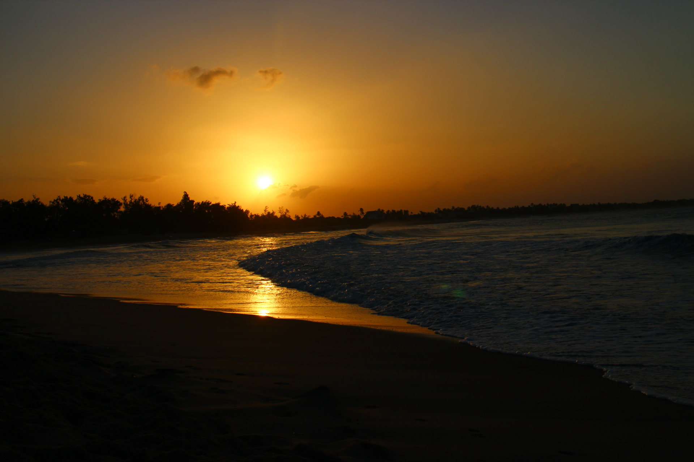

En sida om kaffe
Startsida
Formulär
Om oss
Galleri
Användbara länkar
Idélåda
Vad borde mer finnas på hemsidan? - fyll på listan!
Om du vill ta bort något du lagt till - dubbelklicka på texten!
Lägg till
Från böna till kopp - ett kaffeinitiativ